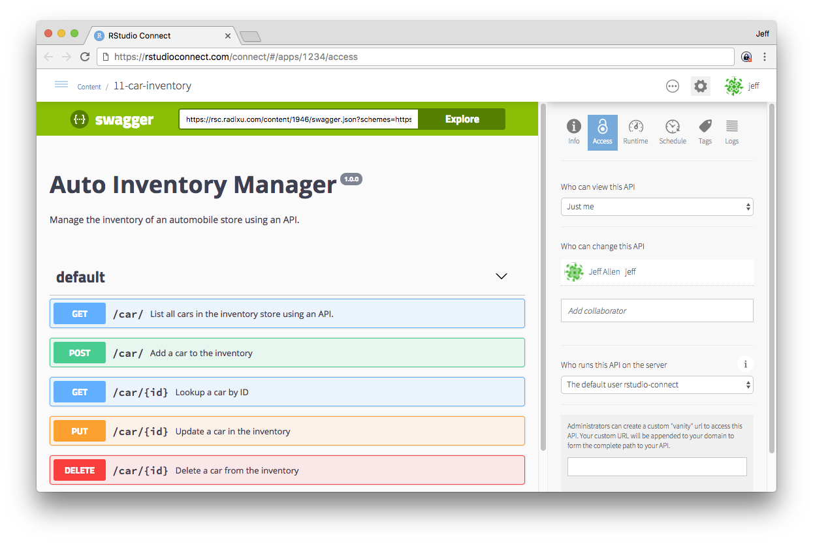

2017-08-03
We’re thrilled to announce support for hosting Plumber APIs in RStudio Connect: version 1.5.4. Plumber is an R package that allows you to define web APIs by adding special annotations to your existing R code – allowing you to make your R functions accessible to other systems.
Below you can see the auto-generated “swagger” interface for a web API written using Plumber.

The open-source Plumber R package enables you to create web APIs by merely adding special comments to your existing functions. These APIs can then be leveraged from other systems in your organization. For instance, you could query some functions written in R from a Java or Python application. Or you could develop a client for your API in JavaScript and allow users to interact with your R functions from a web browser.
Like Shiny applications, RStudio Connect supports one-step publishing, access controls, logging, and scaling for Plumber APIs. Visit the documentation for guidance on publishing APIs to RStudio Connect.
Users may now create and manage personal API keys that will allow them to programmatically access APIs that require authentication; see the user guide for more details.
Other notable changes this release:
[Client].ReconnectTimeout to something like 15s.[Authentication].Inactivity setting can now be used to log users out after a period of inactivity. By default this feature is disabled, meaning users will remain logged in until their session expires, as controlled by the [Authentication].Lifetime setting. Additionally, we now do a better job of detecting when the user is logged out and immediately send them to the login page.http_proxy and https_proxy environment variables into all child R processes. More documentation available here.[Http].NoWarning = true.rstudio-connect service is restarted or stopped, all running R jobs are immediately interrupted.You can see the full release notes for RStudio Connect 1.5.4 here.
Upgrade Planning
You can expect the installation and startup of v1.5.4 to be completed in under a minute. Previously authenticated users will need to login again when they visit the server again.
If your server is not using Connect’s HTTPS capabilities, your users will see a warning about using an insecure configuration. If you’re doing SSL termination outside of Connect, you should configure
[Http].NoWarning=trueto remove this warning.If you’re upgrading from a release older than 1.5.0, be sure to consider the “Upgrade Planning” notes from those other releases, as well.
If you haven’t yet had a chance to download and try RStudio Connect we encourage you to do so. RStudio Connect is the best way to share all the work that you do in R (Shiny apps, R Markdown documents, plots, dashboards, Plumber APIs, etc.) with collaborators, colleagues, or customers.
You can find more details or download a 45 day evaluation of the product at https://www.rstudio.com/products/connect/. Additional resources can be found below.